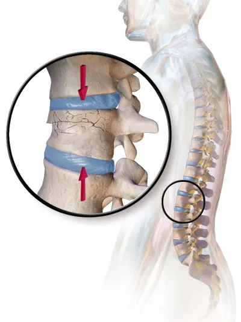
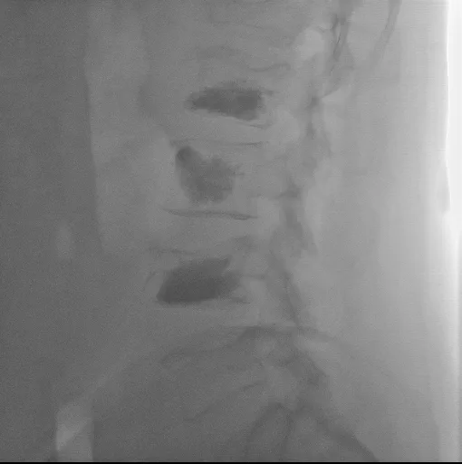

Сначала посмотрите видео
Главное за 30 секунд
- Кифопластика укрепляет сломанный позвонок через небольшой прокол под рентгеновским контролем.
- Чаще всего её делают при компрессионном переломе из-за остеопороза.
- Новая слабость или онемение ног, проблемы с мочой: немедленно в приёмное отделение.
Что это за операция
Кифопластика — малоинвазивная процедура при компрессионном переломе позвонка, чаще всего связанном с остеопорозом. Через небольшой прокол под рентгеновским контролем в тело сломанного позвонка вводят баллон и раздувают его. Это создаёт полость и иногда позволяет частично восстановить высоту позвонка. Затем баллон сдувают и извлекают, а полость заполняют костным цементом, который затвердевает.
- Цель — уменьшить боль и укрепить сломанный позвонок.
- Кифопластику могут рассмотреть, если сильная боль сохраняется после свежего остеопоротического перелома позвонка, который не сросся, несмотря на адекватное обезболивание. Обследование и снимки должны подтвердить, что боль идёт именно от сломанного позвонка (NICE TA279).
- Вид обезболивания (общий наркоз или местная анестезия с седацией) выбирает анестезиолог.
- Кифопластика не лечит сам остеопороз. После процедуры обсудите с врачом обследование и начало или продолжение лечения остеопороза, чтобы снизить риск новых переломов.


Поступление
Поступление в отделение
- В день поступления медсестра проведёт беседу при приёме: спросит о здоровье, лекарствах и аллергиях, измерит давление, пульс, температуру и сатурацию, при необходимости — рост и вес.
- Вас оформят, наденут идентификационный браслет и покажут палату: кнопку вызова медсестры, туалет, душ и место с питьевой водой.
- Врач объяснит план операции, а анестезиолог — план анестезии. Вас попросят дать информированное согласие на операцию и анестезию. Встреча с анестезиологом может проходить позже, но до операции.

Подготовка
Подготовка
- Душ: вечером накануне операции вымойте тело и волосы. Утром повторите душ, если это указано отделением. Используйте мыло или антисептическое средство согласно инструкции отделения. Если есть аллергия на мыло или антисептики — сообщите персоналу.
- Не брейте кожу на спине в области операции сами.
- Сообщите заранее, если есть рана, ссадина или воспаление кожи на спине, температура, кашель, жжение при мочеиспускании, проблема с зубами — любая инфекция до операции.
- Принесите список всех лекарств и последние снимки/исследования позвоночника, если они у вас есть.
Лекарства перед операцией
Это общие правила. Точные указания даст ваш врач — следуйте им.
- Принесите список всех лекарств, которые принимаете.
- Препараты, разжижающие кровь (антикоагулянты и антиагреганты): останавливать — только по указанию врача. Аспирин не отменяйте сами.
- Если вы принимаете ингибиторы SGLT2 (например, эмпаглифлозин, дапаглифлозин или эртуглифлозин), заранее сообщите врачу, даже если у вас нет диабета: некоторые из этих лекарств назначают также при сердечной недостаточности и болезни почек. Перед плановой операцией эмпаглифлозин и дапаглифлозин обычно прекращают не менее чем за 3 дня, эртуглифлозин — не менее чем за 4 дня. Это помогает снизить риск кетоацидоза, который может возникать без выраженного повышения сахара крови. Когда прекратить и возобновить лечение, определяет врач. Не меняйте лечение самостоятельно.
- Инсулин и другие препараты от диабета: врач даст вам индивидуальный план на день перед операцией и на день операции. При диабете первого типа организму необходим базальный инсулин. Его могут вводить инъекциями или непрерывно подавать с помощью инсулиновой помпы. Не прекращайте введение базального инсулина и не меняйте настройки помпы самостоятельно. Получите индивидуальные указания врача на период перед операцией и после неё.
- Голодание: обычно лёгкую еду необходимо закончить не менее чем за 6 часов до начала анестезии, жирную или тяжёлую — не менее чем за 8 часов. Прозрачные жидкости, например воду, обычно можно пить до 2 часов до анестезии. При некоторых заболеваниях, включая диабет и замедленное опорожнение желудка, правила могут отличаться. Следуйте точным указаниям отделения.
Операция
День операции
- Соблюдайте полученные указания о голодании, питье и приёме лекарств. Примите душ с тем средством, которое указало отделение, и в назначенное время.
- Перед операцией на позвоночнике в нашем отделении вечером накануне и утром в день операции необходимо принять душ со средством «Септал скраб» (хлоргексидин 4%), если нет аллергии на хлоргексидин. Сразу после утреннего душа, когда кожа полностью высохнет, самостоятельно протрите тело шестью салфетками Sage с хлоргексидином 2%, используя отдельную салфетку для каждой зоны: 1) шея, грудь, живот и паховые складки; 2) правая рука и подмышка; 3) левая рука и подмышка; 4) правая нога и стопа; 5) левая нога и стопа; 6) задняя поверхность шеи, спина и ягодицы. Для обработки спины попросите помощи персонала; не протирайте лицо, глаза, уши, рот, половые органы, слизистые, открытые раны или раздражённую кожу, не смывайте средство, дайте коже высохнуть на воздухе, наденьте чистую одежду и не используйте кремы, лосьоны или дезодорант. Не брейте область операции самостоятельно; при известной аллергии на хлоргексидин не используйте средства, а при появлении реакции прекратите обработку и немедленно сообщите медицинскому персоналу. Подробнее: схема шести зон
- Перед отправлением в операционный блок наденьте больничную рубашку. Снимите украшения и часы. Контактные линзы, съёмные зубные протезы и слуховые аппараты снимайте по указанию персонала: некоторые из них можно оставить до встречи с анестезиологом. Идентификационный браслет не снимайте.
- Когда операционная команда будет готова, персонал отвезёт вас в операционный блок на кровати или каталке. Медсестра передаст необходимую информацию принимающей команде.
- Перед операцией у вас ещё раз уточнят имя, вид операции, сторону или место вмешательства, а также сведения об аллергиях. Повторные вопросы — обычная часть проверки безопасности.
- Близкие могут уточнить у персонала, где им разрешено ожидать. Во многих больницах есть зона ожидания для родственников, а в некоторых — экран с этапами операции по номеру пациента: «в операционной», «в палате пробуждения», «переведён в отделение». Уточните, какая система используется здесь.
- После операции вы обычно некоторое время будете находиться в палате пробуждения под наблюдением. Когда ваше состояние позволит, вас переведут в отделение. Иногда требуется дополнительное наблюдение или лечение в другом подразделении. Продолжительность зависит от операции, анестезии и вашего состояния.
После операции
Дренаж
После обычной кифопластики дренаж, как правило, не устанавливают. Если он всё же стоит, не трогайте и не отсоединяйте трубку — уход объяснит команда.
Первые часы после операции: как помочь и не помешать
- Особое время. Первые часы и первые сутки после операции — время, когда за человеком наблюдают особенно внимательно. Чаще всего всё идёт спокойно, но иногда помощь нужна очень быстро. Поэтому проход к пациенту и медицинскому оборудованию всегда должен оставаться свободным.
- Медсестра проверяет. После возвращения в отделение медсестра регулярно проверяет давление, пульс, частоту дыхания, насыщение крови кислородом, температуру и уровень сознания, а также осматривает область операции. В нашем отделении обычно так: сразу при поступлении из операционной, затем через час, ещё через час, затем через два часа, а дальше каждые четыре часа в течение первых суток. При необходимости проверки делают чаще. Это плановое наблюдение и не обязательно означает, что что-то не так. Если назначен эноксапарин (Клексан), после некоторых ортопедических операций в нашем отделении первый послеоперационный укол обычно делают примерно через двенадцать часов. Время определяет врач с учётом остановки кровотечения, вида операции и спинальной или эпидуральной анестезии.
- Свободный проход. Пожалуйста, оставляйте свободный проход к кровати со всех сторон. Не ставьте стулья и сумки вплотную к кровати и в проходе. Медсестра и врач должны быстро подойти к пациенту, а тележка — подъехать с лекарствами и оборудованием.
- Меньше людей — лучше. Лучше, если одновременно рядом с пациентом будет не больше одного-двух близких, если это допускают правила отделения. Когда персонал подходит к пациенту, пожалуйста, освободите место. Если вас попросили выйти из палаты, выполните просьбу. Позже можно уточнить причину и задать вопросы.
- Только с разрешения. После наркоза бывают тошнота и рвота, а ослабленный человек может поперхнуться. После операции не давайте пациенту еду и питьё без разрешения медсестры. Когда пациент достаточно проснулся, может безопасно глотать и нет других ограничений, ему могут разрешить пить и есть. Иногда начинают с небольшого количества воды, затем переходят к еде. Когда и что можно, решает медицинская команда.
- Борта и кнопка. Борта кровати поднимают по решению персонала, с учётом состояния пациента. Они подходят не всем и не заменяют помощь при вставании. Не поднимайте и не опускайте борта самостоятельно. Кнопка вызова должна быть под рукой. Вставайте только с разрешения медицинской команды, первый раз — с помощью персонала.
- Если что-то не так. Если пациента тошнит, ему трудно дышать, он стал необычно сонливым, его трудно разбудить, появилась внезапная спутанность сознания или сильное беспокойство, боль резко усилилась либо повязка быстро пропитывается кровью — немедленно позовите медсестру. Нажмите кнопку вызова, а при тяжёлом состоянии громко зовите персонал. Не давайте самостоятельно еду, питьё или лекарства и не пытайтесь поднимать пациента.
Защита от инфекции в больнице: что могут сделать пациент и близкие
- Чистые руки. Обрабатывайте руки антисептиком или мойте с мылом при входе в палату и выходе из неё, до и после прикосновения к пациенту. После туалета, перед едой и при видимом загрязнении мойте руки водой с мылом. Антисептик обычно есть у входа в палату или у кровати. Можно вежливо попросить персонал обработать руки перед осмотром — это нормально.
- Рана и трубки. Не трогайте рану, повязку, дренаж, катетер и капельницу и не снимайте повязку сами. Если повязка намокла, загрязнилась или сползла, скажите медсестре.
- Чужое не трогать. Не садитесь на чужие кровати, не трогайте оборудование, раны и вещи других пациентов.
- Не заходите в чужие палаты. Без необходимости не ходите по другим палатам и отделениям больницы. Близким с температурой, кашлем, насморком, рвотой или поносом лучше не приходить, пока они не выздоровеют.
- Устойчивые бактерии. Некоторые бактерии устойчивы к антибиотикам. Если у пациента обнаружили такие бактерии, персонал может назначить дополнительные меры защиты: изоляцию, использование халатов и перчаток, особые правила посещения. Конкретные меры зависят от вида бактерии и ситуации. Если персонал сообщил об особых мерах предосторожности, строго выполняйте инструкции — это помогает защищать пациентов и близких.
- Повышенный риск. Особенно внимательно соблюдайте меры профилактики при открытых переломах, значительном повреждении мягких тканей, наружном фиксирующем аппарате (спицы или стержни проходят через кожу в кость), диабете и после сложных или длительных операций. В этих ситуациях риск инфекционных осложнений может быть выше.
- Сразу сообщите медсестре, если: появились температура или озноб; покраснение, усиливающаяся боль, отёк или выделения из раны; покраснение или выделения вокруг мест входа спиц или стержней наружного фиксатора либо вокруг места установки внутривенного катетера.
Реабилитация и дома
Когда срочно обращаться за помощью
В больнице немедленно сообщите медсестре. После выписки немедленно обратитесь в приёмное отделение, если появилась новая или усиливающаяся слабость или онемение в ногах, онемение в области половых органов, между ног или вокруг заднего прохода (область «седла»), затруднение при начале мочеиспускания или при мочеиспускании, потеря обычного ощущения позыва к мочеиспусканию, невозможность помочиться либо новая потеря контроля над мочевым пузырём или кишечником. Не садитесь за руль сами. Если не можете безопасно добраться до приёмного отделения, вызывайте скорую помощь по номеру 101 («Маген Давид Адом»). При внезапной одышке, боли в груди, обмороке или выраженном затруднении дыхания немедленно вызывайте скорую помощь по номеру 101 («Маген Давид Адом»): после процедуры такие симптомы могут указывать на опасное осложнение, в том числе эмболию. Срочно свяжитесь с отделением ортопедии или обратитесь за медицинской помощью также при новой сильной боли в спине, температуре, нарастающем покраснении, отёке или выделениях из места прокола.
Источники
- NICE, Percutaneous vertebroplasty and percutaneous balloon kyphoplasty, 2013, rec. 1.1
- NICE, Balloon kyphoplasty for vertebral compression fractures, HealthTech guidance HTG108 (formerly IPG166), published 26 April 2006
- NICE, Osteoporosis, QS149, Quality statement 2 (2017)
- NICE, Surgical site infections: prevention and treatment, NG125, rec. 1.2.1, 1.2.4–5
- FDA, Jardiance (empagliflozin), label revised 10/2025, §2.3 and §5.1
- FDA, Farxiga (dapagliflozin), label revised 06/2024, §2.4 and §5.1
- FDA, Steglatro (ertugliflozin), label revised 06/2026, §2.3 and §5.1
- ADA, Standards of Care in Diabetes—2026, section 16
- ASA, Practice Guidelines for Preoperative Fasting, Anesthesiology 2017
- NHS, Sciatica: emergency neurological symptoms
- CDC, About Venous Thromboembolism (Blood Clots)
- CHEST 2022 — Perioperative Management of Antithrombotic Therapy (Douketis et al.)
- Минздрав Израиля — циркуляр Медицинского управления 24/2001
- AAOS OrthoInfo, Osteoporosis and Spinal Fractures (Surgical Treatment → Kyphoplasty)
- Маген Давид Адом — официальный сайт
קודם כל, צפו בסרטונים
העיקר בחצי דקה
- קיפופלסטיקה מחזקת חוליה שבורה דרך דקירה קטנה בהנחיית שיקוף רנטגן.
- לרוב עושים אותה בשבר דחיסה בגלל אוסטאופורוזיס.
- חולשה או נימול חדשים ברגליים, בעיה במתן שתן: מיד למיון.
מה הניתוח
קיפופלסטיקה היא פעולה זעיר־פולשנית לטיפול בשבר דחיסה בחוליה, לרוב על רקע אוסטאופורוזיס (דלדול עצם). דרך דקירה קטנה בגב ובהנחיית שיקוף רנטגן מחדירים בלון לגוף החוליה השבורה ומנפחים אותו. כך נוצר חלל, ולעיתים אפשר לשחזר חלק מגובה החוליה. לאחר מכן מרוקנים את הבלון ומוציאים אותו, וממלאים את החלל בצמנט עצם שמתקשה.
- המטרה — להפחית את הכאב ולחזק את החוליה השבורה.
- ניתן לשקול קיפופלסטיקה אם כאב חזק נמשך לאחר שבר אוסטאופורוטי טרי בחוליה שלא התאחה, למרות טיפול מתאים בכאב. הבדיקה והצילומים חייבים לאשר שהכאב נובע מהחוליה השבורה (NICE TA279).
- את סוג ההרדמה (הרדמה כללית או הרדמה מקומית עם טשטוש) בוחר הרופא המרדים.
- קיפופלסטיקה אינה מטפלת באוסטאופורוזיס עצמו. לאחר הפעולה שוחחו עם הרופא על בירור ועל התחלה או המשך טיפול באוסטאופורוזיס, כדי להפחית את הסיכון לשברים נוספים.
קבלה
קבלה למחלקה
- ביום הקבלה לאשפוז תעברו קבלה סיעודית. האחות תשאל על מצבכם הבריאותי, תרופות ואלרגיות, תמדוד לחץ דם, דופק, חום וסטורציה, ובמידת הצורך גם גובה ומשקל.
- יבצעו את תהליך הקבלה, יענדו לכם ידון זיהוי ויראו לכם את החדר, את לחצן הקריאה לאחות, השירותים, המקלחת והמתקן למי שתייה.
- הרופא יסביר לכם על הניתוח המתוכנן, והרופא המרדים יסביר על תוכנית ההרדמה. תתבקשו לתת הסכמה מדעת לניתוח ולהרדמה. הבדיקה אצל הרופא המרדים עשויה להתקיים בשלב מאוחר יותר, אך לפני הניתוח.
הכנה לניתוח
הכנה לניתוח
- מקלחת: בערב שלפני הניתוח יש להתקלח ולחפוף את הראש. בבוקר הניתוח יש לחזור על המקלחת אם המחלקה הנחתה כך. השתמשו בסבון או בתכשיר החיטוי לפי הוראות המחלקה. אם ידועה לכם אלרגיה לסבון או לחומרי חיטוי, דווחו לצוות.
- אל תגלחו בעצמכם את עור הגב באזור הניתוח.
- דווחו מראש אם יש פצע, שריטה או דלקת בעור הגב, חום, שיעול, צריבה במתן שתן, בעיה בשיניים — כל זיהום לפני הניתוח.
- הביאו רשימה של כל התרופות ואת צילומי ובדיקות עמוד השדרה האחרונים, אם יש לכם.
תרופות לפני הניתוח
אלה כללים כלליים. את ההוראות המדויקות ייתן לכם הרופא — פעלו לפיהן.
- הביאו רשימה של כל התרופות שאתם נוטלים.
- תרופות לדילול הדם (נוגדי קרישה ונוגדי טסיות): מפסיקים רק לפי הוראת רופא. אל תפסיקו אספירין בעצמכם.
- אם אתם נוטלים מעכבי SGLT2 (למשל אמפגליפלוזין, דפגליפלוזין או ארטוגליפלוזין), הודיעו לרופא מראש גם אם אין לכם סוכרת: חלק מהתרופות האלה ניתנות גם באי־ספיקת לב ובמחלות כליה. לפני ניתוח מתוכנן נהוג להפסיק אמפגליפלוזין ודפגליפלוזין לפחות 3 ימים מראש, וארטוגליפלוזין לפחות 4 ימים מראש. כך מפחיתים את הסיכון לחמצת קטוטית, שעלולה להופיע גם ללא עלייה משמעותית ברמת הסוכר בדם. הרופא יקבע מתי להפסיק ומתי לחדש את הטיפול. אל תשנו את הטיפול על דעת עצמכם.
- אינסולין ותרופות אחרות לסוכרת: הרופא ייתן לכם תוכנית אישית ליום שלפני הניתוח וליום הניתוח. בסוכרת מסוג אחת הגוף זקוק לאינסולין בסיסי. אפשר לקבל אותו בזריקות או באמצעות הזלפה רציפה ממשאבת אינסולין. אל תפסיקו את מתן האינסולין הבסיסי ואל תשנו בעצמכם את הגדרות המשאבה. קבלו מהרופא הנחיות אישיות לתקופה שלפני הניתוח ולאחריו.
- צום: בדרך כלל יש לסיים ארוחה קלה לפחות 6 שעות לפני תחילת ההרדמה, וארוחה שומנית או כבדה לפחות 8 שעות לפניה. בדרך כלל אפשר לשתות נוזלים צלולים, כגון מים, עד שעתיים לפני ההרדמה. במצבים מסוימים, כולל סוכרת והתרוקנות איטית של הקיבה, ההנחיות עשויות להיות שונות. פעלו לפי ההוראות המדויקות של המחלקה.
ניתוח
יום הניתוח
- הקפידו על ההנחיות שקיבלתם לגבי צום, שתייה ונטילת תרופות. התקלחו בתכשיר הרחצה שהמחלקה הנחתה אתכם להשתמש בו, במועד שנקבע.
- לפני ניתוח בעמוד השדרה, במחלקה שלנו יש להתקלח בערב שלפני הניתוח ושוב בבוקר הניתוח בתכשיר ספטל סקראב המכיל כלורהקסידין בריכוז ארבעה אחוזים, בתנאי שאין אלרגיה לכלורהקסידין. מיד לאחר מקלחת הבוקר, כשהעור יבש לחלוטין, נגבו בעצמכם את הגוף בשש מטליות סייג' המכילות כלורהקסידין בריכוז שני אחוזים, מטלית נפרדת לכל אזור: הצוואר, החזה, הבטן וקפלי המפשעה; זרוע ימין ובית השחי; זרוע שמאל ובית השחי; רגל ימין וכף הרגל; רגל שמאל וכף הרגל; העורף, הגב והישבן. בקשו עזרה מהצוות בניגוב הגב; אין לנגב את הפנים, העיניים, האוזניים, הפה, איברי המין, הריריות, פצעים פתוחים או עור מגורה, אין לשטוף את החומר לאחר הניגוב, יש לתת לעור להתייבש באוויר, ללבוש בגדים נקיים ולהימנע מקרמים, תחליבים ודאודורנט. אל תגלחו בעצמכם את אזור הניתוח; אם ידועה אלרגיה לכלורהקסידין אל תשתמשו בתכשירים, ואם מופיעה תגובה הפסיקו את השימוש ודווחו מיד לצוות הרפואי. פירוט: תרשים שישה אזורים
- לפני היציאה לחדר הניתוח לבשו חלוק אשפוז. הסירו תכשיטים ושעון. עדשות מגע, שיניים תותבות נשלפות ומכשירי שמיעה יש להסיר לפי הנחיות הצוות; בחלק מהמקרים אפשר להשאיר חלק מהם עד למפגש עם הרופא המרדים. אל תסירו את ידון הזיהוי.
- כאשר צוות חדר הניתוח יהיה מוכן, הצוות יעביר אתכם למתחם חדרי הניתוח במיטה או באלונקה. האחות תעביר לצוות המקבל את המידע הדרוש להמשך הטיפול.
- לפני הניתוח יוודאו איתכם שוב את שמכם, סוג הניתוח, הצד או אזור הניתוח ואת המידע על אלרגיות. השאלות החוזרות הן חלק שגרתי מבדיקות הבטיחות.
- בני המשפחה יכולים לברר עם הצוות היכן מותר להם להמתין. בבתי חולים רבים יש אזור המתנה למשפחות, ובחלקם גם מסך המציג את שלב הטיפול לפי מספר זיהוי של המטופל: ״בחדר ניתוח״, ״בהתאוששות״ או ״הועבר למחלקה״. בררו עם הצוות איזו מערכת קיימת כאן.
- לאחר הניתוח תשהו בדרך כלל זמן מה בחדר התאוששות תחת השגחה. כשמצבכם יאפשר זאת, תועברו למחלקה. לעיתים נדרשים השגחה נוספת או טיפול ביחידה אחרת. משך השהייה תלוי בסוג הניתוח, בהרדמה ובמצבכם.
אחרי הניתוח
נקז
אחרי קיפופלסטיקה רגילה בדרך כלל לא משאירים נקז. אם בכל זאת הושאר נקז, אל תיגעו בצינורית ואל תנתקו אותה — הצוות יסביר איך לשמור עליו.
השעות הראשונות אחרי הניתוח: איך לעזור ולא להפריע
- זמן מיוחד. השעות הראשונות והיממה הראשונה אחרי ניתוח הן זמן שבו עוקבים אחרי המטופל בתשומת לב מיוחדת. ברוב המקרים הכול עובר בשקט, אבל לפעמים צריך עזרה מהר מאוד. לכן הדרך אל המטופל ואל הציוד הרפואי צריכה להישאר פנויה תמיד.
- האחות בודקת. אחרי החזרה למחלקה, האחות בודקת באופן קבוע לחץ דם, דופק, קצב נשימה, ריווי חמצן בדם, חום ורמת הכרה, ובודקת גם את אזור הניתוח. במחלקה שלנו בדרך כלל כך: מיד בקבלה מחדר הניתוח, אחר כך אחרי שעה, אחרי עוד שעה, אחר כך אחרי שעתיים, ומשם כל ארבע שעות במשך היממה הראשונה. בעת הצורך בודקים לעיתים קרובות יותר. זה מעקב מתוכנן, והוא לא בהכרח אומר שמשהו לא בסדר. אם נרשם אנוקספרין, קלקסן, אחרי חלק מהניתוחים האורתופדיים במחלקה שלנו הזריקה הראשונה שלאחר הניתוח ניתנת בדרך כלל כשתים עשרה שעות אחרי הניתוח. הרופא קובע את המועד לפי מצב הדימום, סוג הניתוח וההרדמה הספינלית או האפידורלית.
- מעבר פנוי. בבקשה, השאירו מעבר פנוי למיטה מכל הצדדים. אל תעמידו כיסאות ותיקים צמוד למיטה ובמעבר. האחות והרופא צריכים להגיע מהר אל המטופל, ועגלת התרופות והציוד צריכה להגיע עד אליו.
- פחות אנשים, יותר טוב. עדיף שליד המטופל יהיו בו זמנית לא יותר מאחד או שניים מבני המשפחה, אם נהלי המחלקה מאפשרים זאת. כשהצוות ניגש למטופל, בבקשה פנו מקום. אם ביקשו מכם לצאת מהחדר, עשו זאת. אחר כך אפשר לשאול על הסיבה ולשאול שאלות.
- רק באישור. אחרי הרדמה יכולות להיות בחילה והקאה, ואדם חלש עלול להיחנק. אחרי ניתוח אל תתנו למטופל אוכל ושתייה בלי אישור של האחות. כשהמטופל ער מספיק, יכול לבלוע בבטחה ואין הגבלות אחרות, ירשו לו לשתות ולאכול. לפעמים מתחילים בכמות קטנה של מים ואחר כך עוברים לאוכל. מתי ומה מותר, הצוות הרפואי מחליט.
- מעקות וכפתור. את מעקות המיטה מרימים לפי החלטת הצוות, בהתאם למצב המטופל. הם לא מתאימים לכולם ולא מחליפים עזרה בקימה. אל תרימו ואל תורידו את המעקות בעצמכם. כפתור הקריאה צריך להיות בהישג יד. קמים רק באישור הצוות הרפואי, ובפעם הראשונה בעזרת הצוות.
- אם משהו לא בסדר. אם למטופל יש בחילה, קשה לו לנשום, הוא ישנוני באופן חריג, קשה להעיר אותו, הופיע בלבול פתאומי או אי שקט חזק, הכאב התגבר מאוד, או שהחבישה נספגת בדם במהירות, קראו מיד לאחות. לחצו על כפתור הקריאה, ובמצב קשה קראו לצוות בקול רם. אל תתנו בעצמכם אוכל, שתייה או תרופות, ואל תנסו להרים את המטופל.
מניעת זיהומים בבית החולים: מה יכולים לעשות המטופל והמשפחה
- ידיים נקיות. חטאו ידיים בתכשיר לחיטוי ידיים או רחצו אותן במים וסבון בכניסה לחדר וביציאה ממנו, לפני ואחרי מגע במטופל. אחרי השירותים, לפני האוכל וכשהידיים מלוכלכות באופן נראה לעין, רחצו ידיים במים וסבון. תכשיר לחיטוי ידיים נמצא בדרך כלל בכניסה לחדר או ליד המיטה. אפשר לבקש בנימוס מהצוות לחטא ידיים לפני הבדיקה.
- פצע וצינורות. אל תיגעו בפצע, בחבישה, בנקז, בקטטר ובעירוי, ואל תסירו את החבישה בעצמכם. אם החבישה נרטבה, התלכלכה או זזה, ספרו לאחות.
- לא לגעת בשל אחרים. אל תשבו על מיטות של מטופלים אחרים, ואל תיגעו בציוד, בפצעים ובחפצים שלהם.
- לא להיכנס לחדרי מטופלים אחרים. אל תסתובבו ללא צורך בחדרים ובמחלקות אחרות בבית החולים. בני משפחה עם חום, שיעול, נזלת, הקאות או שלשול, עדיף שלא יבואו לבקר עד שיחלימו.
- חיידקים עמידים. יש חיידקים שעמידים לאנטיביוטיקה. אם נמצאו חיידקים כאלה אצל המטופל, הצוות עשוי להורות על אמצעי זהירות נוספים: בידוד, שימוש בחלוקים ובכפפות וכללים מיוחדים לביקורים. האמצעים נקבעים לפי סוג החיידק והמצב. אם הצוות הודיע על הנחיות מיוחדות, הקפידו לפעול לפיהן כדי להגן על המטופלים ועל בני המשפחה.
- סיכון מוגבר. חשוב במיוחד להקפיד על מניעת זיהומים בשברים פתוחים, בפגיעה משמעותית ברקמות הרכות, בקיבוע חיצוני (פינים או חוטי מתכת שעוברים דרך העור אל העצם), בסוכרת ואחרי ניתוחים מורכבים או ממושכים. במצבים אלה הסיכון לסיבוכים זיהומיים עלול להיות גבוה יותר.
- דווחו מיד לאחות אם: הופיעו חום או צמרמורת; אודם, כאב שמתגבר, נפיחות או הפרשה מהפצע; אודם או הפרשה סביב מקומות כניסת הפינים או חוטי המתכת של הקיבוע החיצוני, או סביב מקום כניסת העירוי לווריד.
שיקום והמשך טיפול בבית
מתי לפנות לעזרה דחופה
בבית החולים דווחו מיד לאחות. לאחר השחרור פנו מיד לחדר המיון אם הופיעו חולשה חדשה או מחמירה או חוסר תחושה ברגליים, חוסר תחושה סביב איברי המין, בין הרגליים או סביב פי הטבעת (אזור האוכף), קושי להתחיל להטיל שתן או קושי בהטלת שתן, אובדן התחושה הרגילה של צורך להטיל שתן, חוסר יכולת להטיל שתן או אובדן שליטה חדש על שלפוחית השתן או על המעיים. אל תנהגו בעצמכם. אם אינכם יכולים להגיע בבטחה לחדר המיון, הזמינו את מגן דוד אדום בטלפון 101. במקרה של קוצר נשימה פתאומי, כאב בחזה, עילפון או קושי חמור בנשימה, הזעיקו מיד אמבולנס של מגן דוד אדום בטלפון 101: תסמינים אלה עלולים להעיד על סיבוך מסוכן אחרי הפעולה, לרבות תסחיף. פנו בדחיפות למחלקה המנתחת או לקבלת טיפול רפואי גם אם הופיע כאב גב חדש וחזק, חום, אודם או נפיחות שמתגברים או הפרשה ממקום הדקירה.
מקורות
- NICE, Percutaneous vertebroplasty and percutaneous balloon kyphoplasty, 2013, rec. 1.1
- NICE, Balloon kyphoplasty for vertebral compression fractures, HealthTech guidance HTG108 (formerly IPG166), published 26 April 2006
- NICE, Osteoporosis, QS149, Quality statement 2 (2017)
- NICE, Surgical site infections: prevention and treatment, NG125, rec. 1.2.1, 1.2.4–5
- FDA, Jardiance (empagliflozin), label revised 10/2025, §2.3 and §5.1
- FDA, Farxiga (dapagliflozin), label revised 06/2024, §2.4 and §5.1
- FDA, Steglatro (ertugliflozin), label revised 06/2026, §2.3 and §5.1
- ADA, Standards of Care in Diabetes—2026, section 16
- ASA, Practice Guidelines for Preoperative Fasting, Anesthesiology 2017
- NHS, Sciatica: emergency neurological symptoms
- CDC, About Venous Thromboembolism (Blood Clots)
- CHEST 2022 — Perioperative Management of Antithrombotic Therapy (Douketis et al.)
- משרד הבריאות — חוזר מינהל הרפואה 24/2001
- AAOS OrthoInfo, Osteoporosis and Spinal Fractures (Surgical Treatment → Kyphoplasty)
- מגן דוד אדום — האתר הרשמי
أولًا، شاهدوا الفيديو
الأهم في نصف دقيقة
- رأب الحدبة يقوّي الفقرة المكسورة عبر وخزة صغيرة تحت مراقبة الأشعة.
- يُجرى غالبًا عند كسر انضغاطي بسبب هشاشة العظام.
- ضعف أو خدر جديد في الساقين، مشكلة في التبوّل: توجّهوا فورًا إلى الطوارئ.
ما هي العملية
رأب الحدبة عملية طفيفة التوغل لعلاج كسر انضغاطي في إحدى الفقرات، غالبًا بسبب هشاشة العظام. من خلال فتحة صغيرة في الظهر، وتحت توجيه التصوير بالأشعة السينية، يُدخل بالون إلى جسم الفقرة المكسورة ويُنفخ. يؤدي ذلك إلى تكوين تجويف، وقد يساعد أحيانًا على استعادة جزء من ارتفاع الفقرة. ثم يُفرّغ البالون ويُخرج، ويُملأ التجويف بإسمنت عظمي يتصلّب.
- الهدف — تخفيف الألم وتقوية الفقرة المكسورة.
- يمكن النظر في رأب الحدبة إذا استمر ألم شديد بعد كسر حديث في فقرة بسبب هشاشة العظام لم يلتئم، رغم العلاج المناسب للألم. ويجب أن يؤكد الفحص والصور أن الألم ناتج عن الفقرة المكسورة (NICE TA279).
- يختار طبيب التخدير نوع التخدير (تخدير عام أو تخدير موضعي مع تهدئة).
- عملية رأب الحدبة لا تعالج هشاشة العظام نفسها. بعد العملية، ناقشوا مع الطبيب الفحوص اللازمة وبدء علاج هشاشة العظام أو الاستمرار فيه، للحد من خطر حدوث كسور جديدة.
الدخول
الدخول إلى القسم
- في يوم دخولكم إلى القسم، ستجري معكم الممرضة مقابلة تمريضية. ستسألكم عن حالتكم الصحية والأدوية والحساسية، وستقيس ضغط الدم والنبض ودرجة الحرارة ونسبة تشبّع الدم بالأكسجين، وعند الحاجة الطول والوزن.
- سيُستكمل تسجيل دخولكم، وسيُوضع على معصمكم سوار تعريف. سيُريكم الطاقم غرفتكم وزر استدعاء الممرضة والمرحاض والحمّام ومكان مياه الشرب.
- سيشرح لكم الطبيب خطة العملية، وسيشرح طبيب التخدير خطة التخدير. سيُطلب منكم إعطاء موافقة مستنيرة على العملية والتخدير. قد تتم مقابلة طبيب التخدير لاحقًا، ولكن قبل العملية.
التحضير
التحضير للعملية
- الاستحمام: في مساء اليوم السابق للعملية، استحمّوا واغسلوا الشعر. كرّروا الاستحمام صباح العملية إذا طلب القسم ذلك. استخدموا الصابون أو المطهّر حسب تعليمات القسم. إذا كانت لديكم حساسية من الصابون أو المطهّرات، فأبلغوا الطاقم.
- لا تحلقوا جلد الظهر في منطقة العملية بأنفسكم.
- أبلغوا مسبقاً إذا كان لديكم جرح أو خدش أو التهاب في جلد الظهر، حرارة، سعال، حرقة عند التبول، مشكلة في الأسنان — أي عدوى قبل العملية.
- أحضروا قائمة بكل الأدوية وآخر صور وفحوصات العمود الفقري إن وُجدت.
الأدوية قبل العملية
هذه قواعد عامة. سيعطيكم الطبيب التعليمات الدقيقة — اتبعوها.
- أحضروا قائمة بكل الأدوية التي تتناولونها.
- أدوية تمييع الدم (مضادات التخثر ومضادات الصفائح): يتم إيقافها فقط بتعليمات الطبيب. لا توقفوا الأسبرين بأنفسكم.
- إذا كنتم تتناولون مثبطات SGLT2 (مثل إمباغليفلوزين أو داباغليفلوزين أو إرتوغليفلوزين)، فأبلغوا الطبيب مسبقًا حتى إن لم تكونوا مصابين بالسكري، لأن بعض هذه الأدوية يُستخدم أيضًا لعلاج قصور القلب وأمراض الكلى. قبل العملية المخططة يُوقف إمباغليفلوزين وداباغليفلوزين عادةً قبل 3 أيام على الأقل، وإرتوغليفلوزين قبل 4 أيام على الأقل. وذلك لتقليل خطر الحماض الكيتوني الذي قد يحدث حتى دون ارتفاع ملحوظ في سكر الدم. يحدد الطبيب موعد إيقاف العلاج واستئنافه. لا تغيّروا العلاج من تلقاء أنفسكم.
- الإنسولين وأدوية السكري الأخرى: سيعطيكم الطبيب خطة فردية لليوم السابق للعملية وليوم العملية. في السكري من النوع الأول يحتاج الجسم إلى الإنسولين الأساسي. ويمكن إعطاؤه بالحقن أو بشكل مستمر بواسطة مضخة الإنسولين. لا توقفوا الإنسولين الأساسي ولا تغيّروا إعدادات المضخة بأنفسكم. احصلوا على تعليمات شخصية من الطبيب للفترة التي تسبق العملية وتليها.
- الصيام: عادةً يجب إنهاء وجبة خفيفة قبل بدء التخدير بست ساعات على الأقل، ووجبة دسمة أو ثقيلة قبل ثماني ساعات على الأقل. يمكن عادةً شرب السوائل الصافية، مثل الماء، حتى ساعتين قبل التخدير. قد تختلف التعليمات في بعض الحالات، بما فيها السكري وبطء إفراغ المعدة. اتبعوا تعليمات القسم الدقيقة.
العملية
يوم العملية
- التزموا بالتعليمات التي تلقيتموها بشأن الصيام عن الطعام والشراب وتناول الأدوية. استحمّوا باستخدام المستحضر الذي حدّده القسم وفي الوقت الذي طُلب منكم.
- قبل عملية العمود الفقري في قسمنا، يجب أن تستحموا مساء اليوم السابق للعملية ومرة أخرى صباح يوم العملية باستخدام سبتال سكراب الذي يحتوي على الكلورهيكسيدين بتركيز أربعة بالمئة، بشرط ألا تكون لديكم حساسية منه. فور جفاف الجلد تمامًا بعد استحمام الصباح، امسحوا أجسامكم بأنفسكم باستخدام ست مناديل ساج تحتوي على الكلورهيكسيدين بتركيز اثنين بالمئة، مع تخصيص منديل لكل منطقة: الرقبة والصدر والبطن وثنيات أعلى الفخذين؛ الذراع اليمنى والإبط؛ الذراع اليسرى والإبط؛ الساق اليمنى والقدم؛ الساق اليسرى والقدم؛ الجزء الخلفي من الرقبة والظهر والأرداف. اطلبوا مساعدة الطاقم لمسح الظهر؛ ولا تمسحوا الوجه أو العينين أو الأذنين أو الفم أو الأعضاء التناسلية أو الأغشية المخاطية أو الجروح المفتوحة أو الجلد المتهيج، ولا تشطفوا المادة بعد الاستخدام، بل اتركوها لتجف على الجلد، ثم ارتدوا ملابس نظيفة وتجنبوا الكريمات والمستحضرات ومزيل العرق. لا تحلقوا منطقة العملية بأنفسكم؛ وإذا كانت لديكم حساسية معروفة من الكلورهيكسيدين فلا تستخدموا هذه المستحضرات، وإذا ظهرت أعراض تحسس فأوقفوا الاستعمال وأبلغوا الطاقم الطبي فورًا. التفاصيل: مخطط المناطق الست
- قبل انتقالكم إلى منطقة العمليات، ارتدوا ثوب المستشفى وانزعوا المجوهرات والساعة. أزيلوا العدسات اللاصقة وأطقم الأسنان المتحركة وأجهزة السمع وفقًا لتعليمات الطاقم؛ فقد يُسمح لكم بالاحتفاظ ببعضها حتى مقابلة طبيب التخدير. لا تزيلوا سوار التعريف.
- عندما يكون فريق العمليات جاهزًا، سينقلكم الطاقم إلى منطقة العمليات على السرير أو على نقالة. وستنقل الممرضة المعلومات اللازمة إلى الفريق الذي سيستقبلكم.
- قبل العملية، سيتحقق الطاقم معكم مرة أخرى من اسمكم ونوع العملية والجهة أو موضع الجراحة ومعلومات الحساسية. تكرار هذه الأسئلة جزء اعتيادي من إجراءات السلامة.
- يمكن لأفراد عائلتكم سؤال الطاقم عن المكان المسموح لهم بالانتظار فيه. توجد في كثير من المستشفيات منطقة انتظار للعائلات، وفي بعضها شاشة تعرض مرحلة العلاج باستخدام رقم تعريف المريض، مثل «في غرفة العمليات» و«في غرفة الإفاقة» و«نُقل إلى القسم». اسألوا الطاقم عن النظام المتّبع هنا.
- بعد العملية، ستبقون عادةً لبعض الوقت في غرفة الإفاقة تحت المراقبة. عندما تسمح حالتكم بذلك، ستُنقلون إلى القسم. قد تحتاجون أحيانًا إلى مراقبة إضافية أو علاج في وحدة أخرى. تعتمد المدة على نوع العملية والتخدير وحالتكم الصحية.
بعد العملية
أنبوب التصريف
بعد عملية رأب الحدبة المعتادة لا يُوضع أنبوب تصريف عادةً. وإذا وُضع، فلا تلمسوا الأنبوب ولا تفصلوه — سيشرح لكم الطاقم كيفية العناية به.
الساعات الأولى بعد العملية: كيف تساعدون ولا تعيقون
- وقت خاص. الساعات الأولى واليوم الأول بعد العملية وقت يُراقَب فيه المريض باهتمام خاص. في معظم الحالات يمرّ كل شيء بهدوء، لكن أحيانًا تكون المساعدة مطلوبة بسرعة كبيرة. لذلك يجب أن يبقى الطريق إلى المريض وإلى المعدّات الطبية مفتوحًا دائمًا.
- الممرضة تفحص. بعد العودة إلى القسم، تفحص الممرضة بانتظام ضغط الدم، والنبض، ومعدّل التنفّس، ونسبة الأكسجين في الدم، والحرارة، ومستوى الوعي، وتفحص أيضًا منطقة العملية. في قسمنا يكون ذلك عادةً: فور الوصول من غرفة العمليات، ثم بعد ساعة، ثم بعد ساعة أخرى، ثم بعد ساعتين، وبعد ذلك كل أربع ساعات خلال اليوم الأول. وعند الحاجة تُجرى الفحوص بشكل أكثر تكرارًا. هذه متابعة مخطّطة، ولا تعني بالضرورة أن هناك مشكلة. إذا وُصف الإينوكسابارين، كليكسان، فبعد بعض عمليات العظام في قسمنا تُعطى أول حقنة بعد العملية عادةً بعد نحو اثنتي عشرة ساعة. يحدّد الطبيب الموعد بحسب السيطرة على النزيف، ونوع العملية، والتخدير النخاعي أو فوق الجافية.
- ممرّ مفتوح. من فضلكم، اتركوا ممرًّا مفتوحًا إلى السرير من كل الجهات. لا تضعوا الكراسي والحقائب ملاصقة للسرير أو في الممر. يجب أن تصل الممرضة والطبيب بسرعة إلى المريض، وأن تصل إليه عربة الأدوية والمعدّات.
- أشخاص أقل، أفضل. من الأفضل ألا يكون بجانب المريض في الوقت نفسه أكثر من شخص أو شخصين من الأقارب، إذا سمحت أنظمة القسم بذلك. عندما يقترب الطاقم من المريض، أفسحوا المكان من فضلكم. وإذا طُلب منكم الخروج من الغرفة، فنفّذوا الطلب. ويمكنكم لاحقًا السؤال عن السبب وطرح الأسئلة.
- فقط بإذن. بعد التخدير قد يحدث غثيان وقيء، وقد يختنق الشخص الضعيف. بعد العملية لا تعطوا المريض طعامًا أو شرابًا دون إذن الممرضة. عندما يستيقظ المريض بما يكفي، ويستطيع البلع بأمان، ولا توجد قيود أخرى، قد يُسمح له بالشرب والأكل. وأحيانًا يبدأون بكمية قليلة من الماء ثم ينتقلون إلى الطعام. متى وماذا يُسمح، يقرّر الفريق الطبي.
- الحواجز والزر. تُرفع حواجز السرير بقرار من الطاقم، حسب حالة المريض. وهي لا تناسب الجميع ولا تغني عن المساعدة عند النهوض. لا ترفعوا الحواجز ولا تخفضوها بأنفسكم. يجب أن يكون زر الاستدعاء في متناول اليد. لا تنهضوا إلا بإذن الفريق الطبي، وفي المرة الأولى بمساعدة الطاقم.
- إذا حدث خطب ما. إذا شعر المريض بالغثيان، أو صعب عليه التنفّس، أو أصبح نعسانًا بشكل غير معتاد، أو صعب إيقاظه، أو ظهر عليه تشوّش مفاجئ أو هياج شديد، أو اشتدّ الألم كثيرًا، أو تشرّبت الضمادة بالدم بسرعة، فنادوا الممرضة فورًا. اضغطوا زر الاستدعاء، وفي الحالة الصعبة نادوا الطاقم بصوت عالٍ. لا تعطوا بأنفسكم طعامًا أو شرابًا أو أدوية، ولا تحاولوا رفع المريض.
الوقاية من العدوى في المستشفى: ما يمكن أن يفعله المريض وأهله
- أيدٍ نظيفة. عقّموا أيديكم بمعقّم اليدين أو اغسلوها بالماء والصابون عند دخول الغرفة والخروج منها، وقبل لمس المريض وبعده. بعد استعمال المرحاض، وقبل الأكل، وعندما تكون الأيدي متّسخة بشكل ظاهر، اغسلوها بالماء والصابون. يوجد معقّم اليدين عادةً عند مدخل الغرفة أو بجانب السرير. يمكنكم أن تطلبوا بلطف من الطاقم تعقيم أيديهم قبل الفحص.
- الجرح والأنابيب. لا تلمسوا الجرح أو الضمادة أو أنبوب التصريف أو القسطرة أو أنبوب التسريب الوريدي، ولا تنزعوا الضمادة بأنفسكم. إذا تبلّلت الضمادة أو اتّسخت أو تحرّكت من مكانها، أخبروا الممرضة.
- لا تلمسوا ما يخصّ غيركم. لا تجلسوا على أسرّة المرضى الآخرين، ولا تلمسوا أجهزتهم أو جروحهم أو أغراضهم.
- لا تدخلوا غرف المرضى الآخرين. لا تتجوّلوا دون حاجة في الغرف والأقسام الأخرى في المستشفى. من الأفضل ألّا يزور المريضَ أقاربُ عندهم حرارة أو سعال أو رشح أو تقيّؤ أو إسهال حتى يتعافوا.
- بكتيريا مقاومة. بعض البكتيريا مقاومة للمضادات الحيوية. إذا اكتُشفت هذه البكتيريا لدى المريض، فقد يفرض الطاقم إجراءات وقاية إضافية، مثل العزل واستخدام الأردية والقفازات وقواعد خاصة للزيارات. تعتمد الإجراءات على نوع البكتيريا والحالة. إذا أبلغكم الطاقم بتعليمات خاصة، فالتزموا بها لحماية المرضى وأفراد العائلة.
- خطر أعلى. من المهم الالتزام بشكل خاص بإجراءات الوقاية عند وجود كسور مفتوحة، أو إصابة شديدة في الأنسجة الرخوة، أو مثبّت خارجي (أسلاك أو مسامير تثبيت تمرّ عبر الجلد إلى العظم)، أو مرض السكري، أو بعد عمليات معقّدة أو طويلة. في هذه الحالات قد يكون خطر المضاعفات الناتجة عن العدوى أعلى.
- أبلغوا الممرضة فورًا إذا: ظهرت حرارة أو قشعريرة؛ احمرار أو ألم يزداد أو تورّم أو إفرازات من الجرح؛ احمرار أو إفرازات حول مواضع دخول أسلاك أو مسامير المثبّت الخارجي عبر الجلد، أو حول موضع القسطرة الوريدية.
التأهيل والرعاية في المنزل
متى يجب طلب المساعدة فوراً
أبلغوا الممرضة فورًا إذا كنتم في المستشفى. بعد الخروج، توجّهوا فورًا إلى قسم الطوارئ إذا ظهر ضعف جديد أو متزايد أو خدر في الساقين، أو خدر حول الأعضاء التناسلية أو بين الفخذين أو حول فتحة الشرج (منطقة السرج)، أو صعوبة في بدء التبول أو في إخراج البول، أو فقدان الإحساس المعتاد بالحاجة إلى التبول، أو عجز عن التبول، أو فقدان جديد للتحكم بالمثانة أو الأمعاء. لا تقودوا السيارة بأنفسكم. إذا لم تتمكنوا من الوصول بأمان إلى قسم الطوارئ، اتصلوا بالرقم 101 (نجمة داود الحمراء). عند حدوث ضيق مفاجئ في التنفس أو ألم في الصدر أو إغماء أو صعوبة شديدة في التنفس، اتصلوا فورًا بالإسعاف على الرقم 101 (نجمة داود الحمراء)؛ فقد تدل هذه الأعراض على مضاعفة خطيرة بعد العملية، بما فيها الانصمام. تواصلوا بصورة عاجلة مع القسم الجراحي أو اطلبوا المساعدة الطبية أيضًا عند ظهور ألم جديد وشديد في الظهر، أو حمى، أو احمرار أو تورم متزايد، أو إفرازات من موضع الوخز.
المصادر
- NICE, Percutaneous vertebroplasty and percutaneous balloon kyphoplasty, 2013, rec. 1.1
- NICE, Balloon kyphoplasty for vertebral compression fractures, HealthTech guidance HTG108 (formerly IPG166), published 26 April 2006
- NICE, Osteoporosis, QS149, Quality statement 2 (2017)
- NICE, Surgical site infections: prevention and treatment, NG125, rec. 1.2.1, 1.2.4–5
- FDA, Jardiance (empagliflozin), label revised 10/2025, §2.3 and §5.1
- FDA, Farxiga (dapagliflozin), label revised 06/2024, §2.4 and §5.1
- FDA, Steglatro (ertugliflozin), label revised 06/2026, §2.3 and §5.1
- ADA, Standards of Care in Diabetes—2026, section 16
- ASA, Practice Guidelines for Preoperative Fasting, Anesthesiology 2017
- NHS, Sciatica: emergency neurological symptoms
- CDC, About Venous Thromboembolism (Blood Clots)
- CHEST 2022 — Perioperative Management of Antithrombotic Therapy (Douketis et al.)
- وزارة الصحة الإسرائيلية — تعميم الإدارة الطبية 24/2001
- AAOS OrthoInfo, Osteoporosis and Spinal Fractures (Surgical Treatment → Kyphoplasty)
- نجمة داود الحمراء — الموقع الرسمي
Start with the videos
Key points in 30 seconds
- Kyphoplasty strengthens a broken vertebra through a small puncture under X-ray guidance.
- It is most often done for a compression fracture caused by osteoporosis.
- New leg weakness or numbness, or urinary problems: go to emergency immediately.
What this operation is
Kyphoplasty is a minimally invasive procedure for a vertebral compression fracture, most often caused by osteoporosis. Through a small puncture, guided by X-ray imaging, a balloon is placed inside the body of the broken vertebra and inflated. This creates a cavity and can sometimes partly restore the height of the vertebra. The balloon is then deflated and removed, and the cavity is filled with bone cement, which hardens.
- The goal is to reduce pain and strengthen the broken vertebra.
- Kyphoplasty may be considered if severe pain continues after a recent osteoporotic vertebral fracture that has not healed, despite appropriate pain treatment. Examination and imaging must confirm that the pain comes from the fractured vertebra (NICE TA279).
- The anesthesiologist chooses the type of anesthesia (general anesthesia, or local anesthesia with sedation).
- Kyphoplasty does not treat osteoporosis itself. After the procedure, talk with your doctor about testing and about starting or continuing osteoporosis treatment to lower the risk of new fractures.
Admission
Admission to the ward
- On the day of admission, a nurse will assess you, ask about your health, medicines and allergies, and measure your blood pressure, pulse, temperature and oxygen saturation. Your height and weight will also be measured if needed.
- Your admission will be completed, you will receive an identification wristband, and staff will show you your room, the nurse call button, toilet, shower and drinking water dispenser.
- The doctor will explain the surgical plan, and the anaesthetist will explain the anaesthesia plan. You will be asked to give informed consent for surgery and anaesthesia. The anaesthetic assessment may take place later, but before surgery.
Preparation
Preparation
- Shower: the evening before surgery, wash your body and hair. Shower again in the morning if the ward tells you to. Use soap or an antiseptic product as the ward instructs. If you are allergic to soap or antiseptics, tell the staff.
- Do not shave the skin on your back at the surgery site yourself.
- Tell the staff in advance if you have a wound, scrape, or skin inflammation on your back, a fever, a cough, burning when you urinate, or a dental problem - any infection before surgery.
- Bring a list of all your medicines and your most recent spine images/tests, if you have them.
Medicines before surgery
These are general rules. Your doctor will give you exact instructions - follow them.
- Bring a list of all the medicines you take.
- Blood thinners (anticoagulants and antiplatelet drugs): stop them only if your doctor tells you to. Do not stop aspirin on your own.
- If you take SGLT2 inhibitors (for example, empagliflozin, dapagliflozin, or ertugliflozin), tell your doctor in advance, even if you do not have diabetes: some of these medicines are also prescribed for heart failure and kidney disease. Before planned surgery, empagliflozin and dapagliflozin are usually stopped at least 3 days ahead, and ertugliflozin at least 4 days ahead. This helps lower the risk of ketoacidosis, which can happen without a marked rise in blood sugar. Your doctor decides when to stop and restart treatment. Do not change your treatment on your own.
- Insulin and other diabetes medicines: your doctor will give you an individual plan for the day before surgery and the day of surgery. If you have type 1 diabetes, your body needs basal insulin. It may be given by injections or continuously through an insulin pump. Do not stop your basal insulin or change your pump settings on your own. Ask your doctor for an individual plan before and after surgery.
- Fasting: usually you must finish a light meal at least 6 hours before anesthesia starts, and a fatty or heavy meal at least 8 hours before. Clear liquids, such as water, can usually be drunk until 2 hours before anesthesia. With some conditions, including diabetes and slow stomach emptying, the rules may differ. Follow the ward's exact instructions.
Surgery
The day of surgery
- Follow the instructions you have been given about fasting, drinking and taking medicines. Shower using the cleanser specified by the ward, at the instructed time.
- Before spinal surgery, our ward requires a shower with Septal Scrub (4% chlorhexidine) on the evening before surgery and again on the morning of surgery, unless you are allergic to chlorhexidine. As soon as your skin is completely dry after the morning shower, wipe your body yourself with six Sage 2% chlorhexidine cloths, using one cloth for each area: 1) neck, chest, abdomen and groin folds; 2) right arm and armpit; 3) left arm and armpit; 4) right leg and foot; 5) left leg and foot; 6) back of the neck, back and buttocks. Ask staff to help you wipe your back; do not wipe your face, eyes, ears, mouth, genitals, mucous membranes, open wounds or irritated skin, do not rinse the solution off, allow your skin to air-dry, put on clean clothes and avoid creams, lotions and deodorant. Do not shave the surgical area yourself; if you have a known chlorhexidine allergy, do not use these products, and if a reaction develops, stop using them and inform medical staff immediately. Details: the six-area diagram
- Before going to the operating theatre, put on a hospital gown and remove jewellery and your watch. Remove contact lenses, removable dentures and hearing aids as instructed by staff; some items may be kept until you meet the anaesthetist. Do not remove your identification wristband.
- When the theatre team is ready, staff will take you to the operating theatre area on a bed or trolley. The nurse will hand over the necessary information to the receiving team.
- Before surgery, staff will confirm your name, the procedure, the side or site of surgery, and any allergies. Repeating these questions is a routine safety check.
- Your family can ask staff where they may wait. Many hospitals have a family waiting area, and some have a screen showing progress by patient identification number, such as 'in theatre', 'in recovery' or 'transferred to the ward'. Ask staff which system is available here.
- After surgery, you will usually spend some time in the recovery room under observation. When your condition allows, you will be transferred to the ward. Sometimes additional monitoring or treatment in another unit is needed. The time required depends on the operation, anaesthesia and your condition.
After surgery
Drain
A drain is not usually needed after routine kyphoplasty. If you do have one, do not touch or disconnect the tube — the team will explain how to look after it.
The first hours after surgery: how to help without getting in the way
- A special time. The first hours and the first day after surgery are a time when the patient is watched especially closely. Most of the time everything goes calmly, but sometimes help is needed very quickly. That is why the way to the patient and to the medical equipment must always stay clear.
- The nurse checks. After returning to the ward, the nurse regularly checks blood pressure, pulse, breathing rate, blood oxygen level, temperature and level of consciousness, and also examines the surgical site. On our ward this is usually done on arrival from the operating theatre, then after one hour, after another hour, then after two hours, and then every four hours for the first day. Checks are done more often if needed. This is planned monitoring and does not necessarily mean that something is wrong. If enoxaparin (Clexane) is prescribed, the first postoperative injection on our ward is usually given about twelve hours after certain orthopaedic operations. The doctor decides the timing based on whether surgical bleeding is controlled, the type of operation, and any spinal or epidural anaesthesia.
- A clear path. Please leave a clear path to the bed on all sides. Do not put chairs or bags right next to the bed or in the way. The nurse and doctor must be able to reach the patient quickly, and the trolley with medicines and equipment must be able to get through.
- Fewer people is better. It is best if no more than one or two relatives are with the patient at the same time, if the ward rules allow it. When the staff come to the patient, please make room. If you are asked to leave the room, please do so. You can ask about the reason and ask questions later.
- Only with permission. After anaesthesia there can be nausea and vomiting, and a weak person may choke. After surgery, do not give the patient food or drink without the nurse’s permission. When the patient is awake enough, can swallow safely and there are no other restrictions, they may be allowed to drink and eat. Sometimes they start with a small amount of water and then move on to food. When and what is allowed is decided by the medical team.
- Rails and the button. Bed rails are raised when the staff decide, depending on the patient’s condition. They are not suitable for everyone and do not replace help with getting up. Do not raise or lower the rails yourself. The call button should be within reach. Get up only with the medical team’s permission, and the first time with the staff’s help.
- If something is wrong. If the patient feels sick, finds it hard to breathe, becomes unusually drowsy or hard to wake, suddenly becomes confused or very restless, the pain gets much worse, or the dressing quickly soaks with blood, call the nurse at once. Press the call button, and if the situation is serious, call the staff loudly. Do not give food, drink or medicines yourself, and do not try to lift the patient.
Preventing infection in hospital: what patients and families can do
- Clean hands. Clean your hands with hand sanitiser or soap and water when entering and leaving the room, and before and after touching the patient. Wash your hands with soap and water after using the toilet, before eating and whenever your hands are visibly dirty. Hand sanitiser is usually by the room entrance or next to the bed. You may politely ask staff to clean their hands before an examination.
- Wound and tubes. Do not touch the wound, dressing, drain, catheter or IV line, and do not remove the dressing yourself. If the dressing gets wet, dirty or slips, tell the nurse.
- Leave others' things alone. Do not sit on other patients' beds, and do not touch their equipment, wounds or belongings.
- Avoid other patients' rooms. Do not walk around other rooms and wards of the hospital without need. Relatives with fever, cough, runny nose, vomiting or diarrhoea should not visit until they have recovered.
- Resistant bacteria. Some bacteria are resistant to antibiotics. If these bacteria are found in a patient, staff may introduce additional precautions, such as isolation, gowns and gloves, or special visiting rules. The measures depend on the type of bacteria and the situation. If staff give you special precautions, follow them carefully to help protect patients and families.
- Higher risk. Take extra care to prevent infection with open fractures, significant soft tissue injuries, external fixators (pins or wires pass through the skin into the bone), diabetes, and after complex or prolonged operations. The risk of infectious complications may be higher in these situations.
- Tell the nurse straight away if: there is fever or chills; redness, increasing pain, swelling or discharge from the wound; redness or discharge around the external fixator pin or wire sites, or around the IV catheter site.
Rehabilitation and home care
When to get urgent help
In the hospital, tell the nurse right away. After you go home, go to the emergency department (ER) immediately if you develop new or worsening weakness or numbness in your legs, numbness around the genitals, between the legs, or around the anus (saddle area), difficulty starting or passing urine, loss of the usual feeling that you need to urinate, inability to urinate, or new loss of bladder or bowel control. Do not drive yourself. If you cannot get to the ER safely, call an ambulance on 101 (Magen David Adom). If you have sudden shortness of breath, chest pain, fainting, or severe difficulty breathing, call an ambulance right away at 101 (Magen David Adom): after the procedure, such symptoms can point to a dangerous complication, including an embolism. Also contact the surgical ward or seek medical care urgently for new severe back pain, fever, spreading redness, swelling, or discharge from the puncture site.
Sources
- NICE, Percutaneous vertebroplasty and percutaneous balloon kyphoplasty, 2013, rec. 1.1
- NICE, Balloon kyphoplasty for vertebral compression fractures, HealthTech guidance HTG108 (formerly IPG166), published 26 April 2006
- NICE, Osteoporosis, QS149, Quality statement 2 (2017)
- NICE, Surgical site infections: prevention and treatment, NG125, rec. 1.2.1, 1.2.4–5
- FDA, Jardiance (empagliflozin), label revised 10/2025, §2.3 and §5.1
- FDA, Farxiga (dapagliflozin), label revised 06/2024, §2.4 and §5.1
- FDA, Steglatro (ertugliflozin), label revised 06/2026, §2.3 and §5.1
- ADA, Standards of Care in Diabetes—2026, section 16
- ASA, Practice Guidelines for Preoperative Fasting, Anesthesiology 2017
- NHS, Sciatica: emergency neurological symptoms
- CDC, About Venous Thromboembolism (Blood Clots)
- CHEST 2022 — Perioperative Management of Antithrombotic Therapy (Douketis et al.)
- Israel Ministry of Health — Medical Administration circular 24/2001
- AAOS OrthoInfo, Osteoporosis and Spinal Fractures (Surgical Treatment → Kyphoplasty)
- Magen David Adom — official website